Information aggregated below and more can be found in the SOM IT Service Catalog. For IT questions, please reach out to SOM IT.
Milestone map
| # | Milestone | What it covers | Why |
|---|---|---|---|
| M0 | Before You Arrive | NetID, Duo, MTA, PWG, LiveSafe/shuttle, Amazon Lockers, travel-to-New-Haven link | Pre-travel needs |
| M1 | Orientation Week | Office install, CampusGroups + Yale Connect, Slack transition, calendar sync, ID pickup | Concentrated account setup |
| M2 | Ongoing / Ambient | Outlook, OneDrive/SharePoint, Zoom, printing, bookmarks, help contacts | Used all year |
| M3 | Recruiting Season | EMS interview rooms + etiquette, VPN, Outlook/OneDrive for materials | Spikes during recruiting |
| M4 | Midterms & Finals | Printing, EMS breakout rooms, IT emergency line | Space/urgency spike |
| M5 | Fall Bidding | Bidding site link, enrollment policy link | MBA1 spring-course bidding, late Nov |
Day 1 Setup Checklist
- Activate your NetID. This is the single credential that unlocks almost every Yale system (email, Canvas, CampusGroups, printing, room booking, Wi-Fi). If you haven't activated it yet, do this first.
- Set up Duo. Yale requires two-factor authentication on top of your NetID password for most logins. Register your first device now; most systems below will prompt you for a Duo approval the first time you log in.
- Log into Outlook. This is where most official Yale and SOM communications will land going forward. Check for a welcome email from your Orientation Leader the week of August 10!
- Install Office. Not urgent, but while you're here, why not?
- Join CampusGroups. Most SOM and club events will live here. Download the mobile app, though there's a web version too.
- Join Slack. Before July, most students were invited to a temporary admitted-students workspace before being moved to the official SOM Slack workspace. Join the official one if you haven't already. Consider toggling notifications so the pings don't overwhelm you.
- Set up PaperCut. You don't need funds loaded on day one, but creating the account now means you're not scrambling to print your cheat sheet before your first midterm.
- Bookmark common links. You'll be navigating the same handful of links over and over during your first few weeks. See Section 11.
Accounts, Login & Security
NetID & password
Your NetID is your master login for nearly every Yale system — email, Canvas, CampusGroups, printing, EMS, and more. If you haven't activated it yet, do this as the first step!
YaleID & UPI
These are different from your NetID — a YaleID is a separate identification number, and a UPI is your Universal Person Identifier. You'll be able to pick up your student ID card starting Friday, August 14.
Duo (two-factor authentication)
Yale requires Duo on top of your NetID password for most systems.
- Registering your first device: How to opt in to Duo Everywhere
- New phone, same number: Activate Duo on a new device
- iOS blank/gray screen: Fix guide
VPN (Cisco AnyConnect)
To access some specific resources (including the course auction when bidding for classes off-campus), download the Cisco AnyConnect VPN. Setup instructions here — use your NetID to log in.
Email, Office & File Storage
Install Outlook
Desktop (Windows/Mac):
- Open Outlook
- Select "Add Account"
- Enter your Yale email and NetID password and approve the Duo push when prompted
Web: go to outlook.office365.com and sign in with your Yale email and NetID password.
Mobile:
- Download the Outlook app
- Tap "Add Account" then "Office 365"
- Enter your Yale email and NetID password
Install Office
- Go to the Office Apps & Downloads page on Microsoft 365 (must be logged into Yale Outlook)
- Click "Install Office" — download on up to 5 devices (PCs, Macs, tablets, phones)
- Open the installer from your Downloads once it finishes
- Accept the prompt to allow changes to your device
- Log in with your Yale Office 365 credentials (standard Yale password) to finish
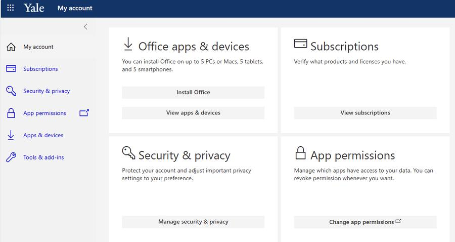
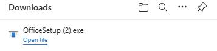
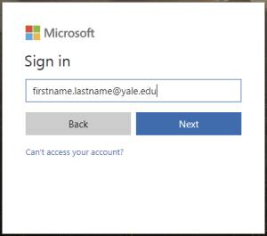
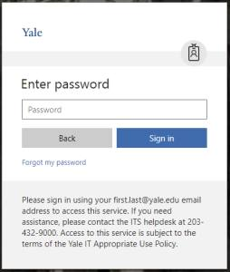
Navigating OneDrive / SharePoint
SharePoint is a shared-file platform, best for learning team documents or club-related tasks that need group-level access separate from your personal OneDrive. Access it at yaleedu.sharepoint.com.
OneDrive is your personal cloud storage, free with your Yale Office 365 account. Save files there to reach them from any device and keep an automatic backup of your work. Access it by logging into login.microsoftonline.com with your Yale email, then selecting OneDrive from the app launcher (top-left grid icon).
Course Bidding
MBA1s enroll in elective spring courses via the course auction. More information will become available through email in late fall semester.
Campus Community Platforms
CampusGroups
Your go-to page for most SOM social and guest-speaker events — everything from the annual Business & Society musical to weekly club meetings to guest talks lives here, plus club sites.
- Go to the CampusGroups login page and sign in with your Yale NetID
- Download the app, select the "Yale School of Management" hub, and join the SOM Community Hub + Orientation channel with your Yale email
- Tap your account icon to add a profile photo and short bio
- Browse events on the Calendar/Events tab; click one and hit Register/RSVP
- Paid events (formals, Internship Fund Auction Night, Business & Society Musical) prompt for payment on the registration page; full events offer an automatic waitlist
- If you can no longer make an event, please unregister — it frees your spot for someone else (especially for free events)
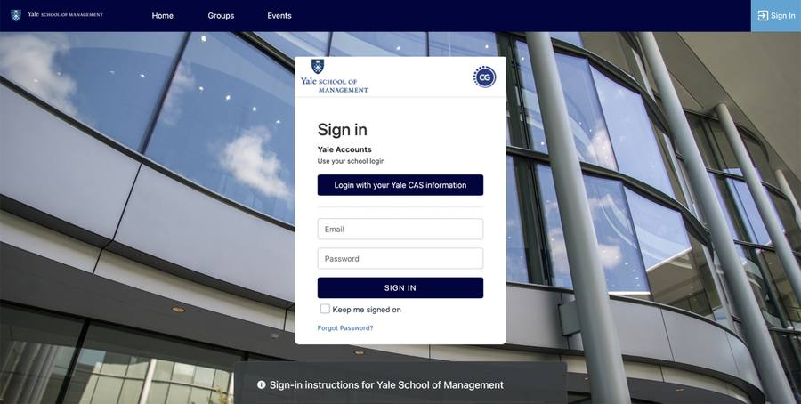
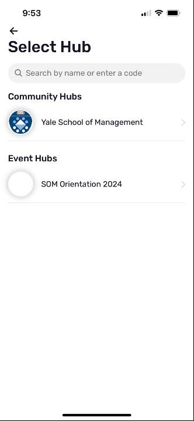
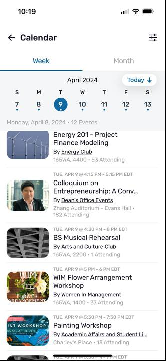
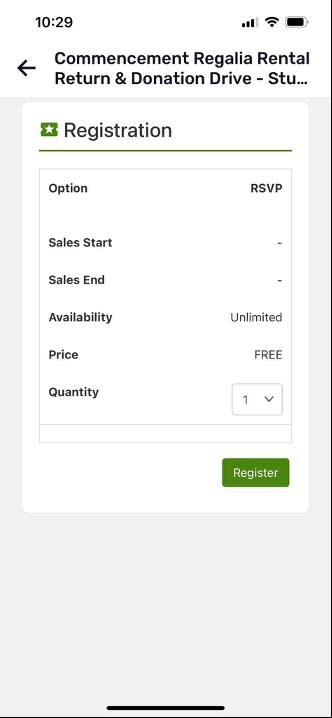
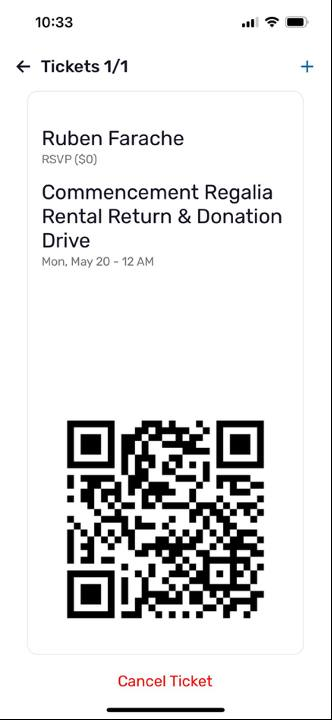
Syncing events to your calendar
- Log into
groups.som.yale.eduwith your NetID - Scroll to the bottom of your dashboard to "Synchronize my Events"
- Optional: check "Also synchronize my YaleSOM classes"
- Click "Enable Synchronization" (or "Manage Settings" if already connected)
- Choose Google Calendar or Office 365, log in, and click Accept on the permissions prompt
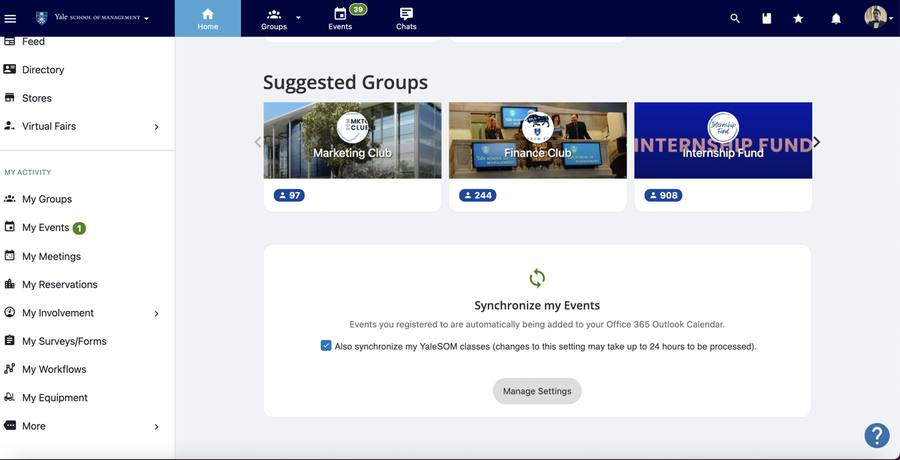
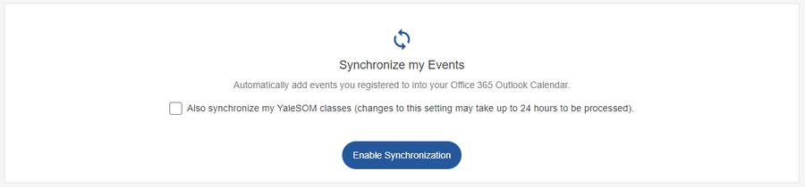
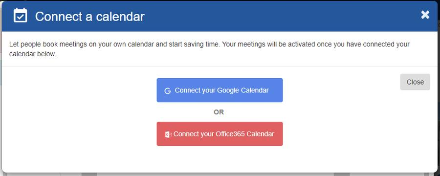
Slack
SOM relies on Slack heavily to make announcements about social events, club events, and student government updates. Peruse channels, but a few to know:
- School-wide channels (
#som-all-programs) - MBA-wide channel (
#4055-mba) - Cohort channels (e.g.
#2028-gold): formal cohort-wide announcements are often posted here #som-marketplace,#free-food
Consider adding your photo to your Slack profile! It makes it much easier for classmates to recognize and connect with you.
A few things to keep in mind
- Etiquette: react generously and keep posts kind — your posts and DMs are in a school-wide workplace
- Notifications: manage notifications and mute channels as you see fit
- Search: use the search bar to look across Slack or within specific channels; check out
#som-faqand#som-bidding - Sections: use the "Sections" feature to group and condense channels by your own priorities
More details on getting started in Slack →
Yale Connect
In addition to CampusGroups (for SOM events), check out Yale Connect (web and mobile app) for events outside SOM across Yale campus.
Printing
Print to one shared queue, then release the job at whichever compatible printer you're standing at — including many Yale printers outside SOM. Nothing prints until you release it. Quick-start guide →
Add funds
- Go to the PaperCut Web Print portal and log in with your NetID/password
- On the dashboard, click "Adding Funds" (you may need to log in again)
- Click "Add Funds" under the Yale NetID section
- Pick an amount ($5–$20 preset, or "Other" up to $99)
- Choose a payment method and submit
Submit a print job
- From the PaperCut homepage, click "Web Print"
- Click "Submit a Job"
- Select your target printer/queue
- Set your number of copies
- Upload your file(s) and submit
Release your print
- Once your job shows "Held in a queue," walk to any compatible printer
- Tap your ID card on the reader, or log in manually with your NetID, to release it
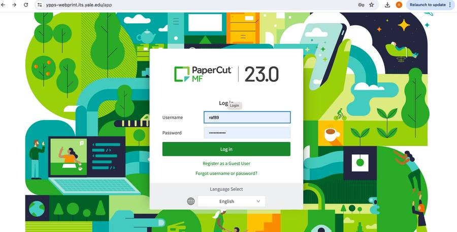
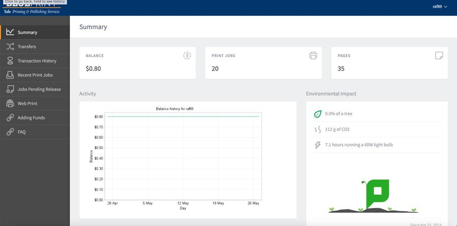
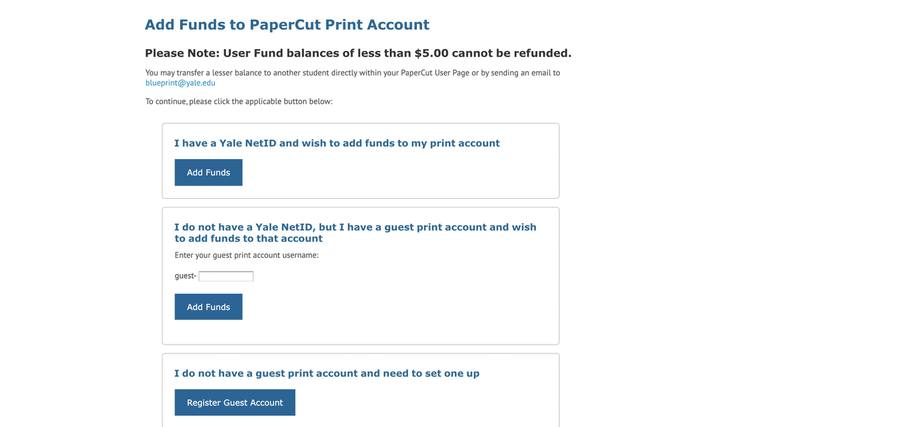
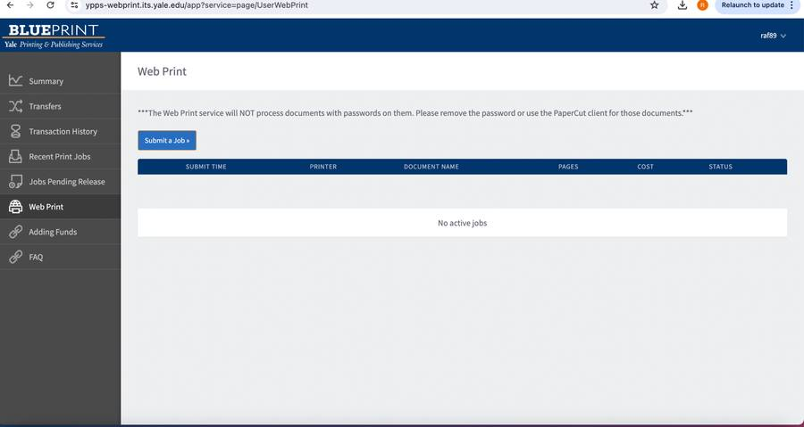
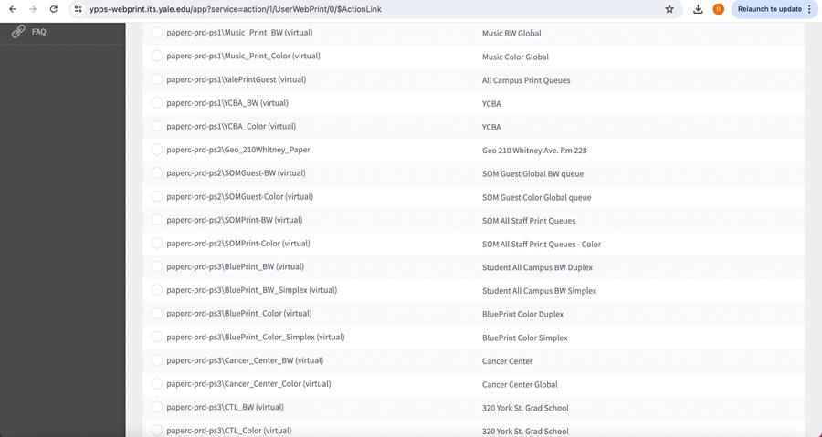
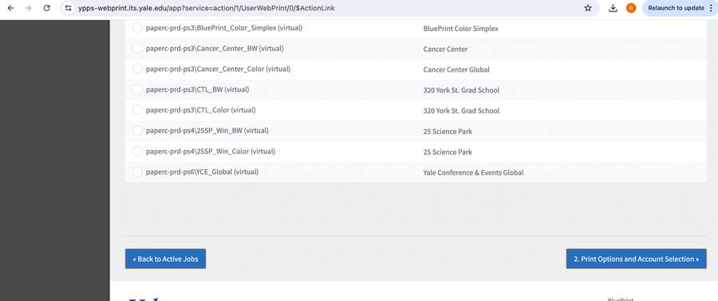
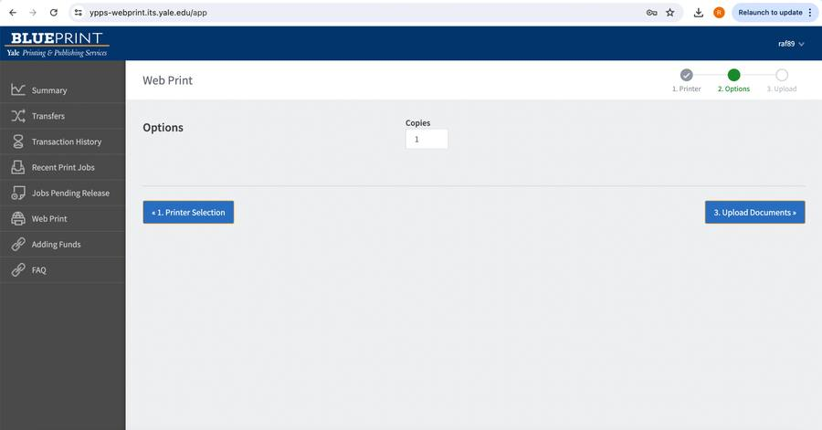
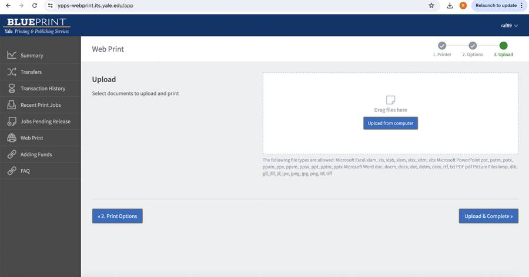
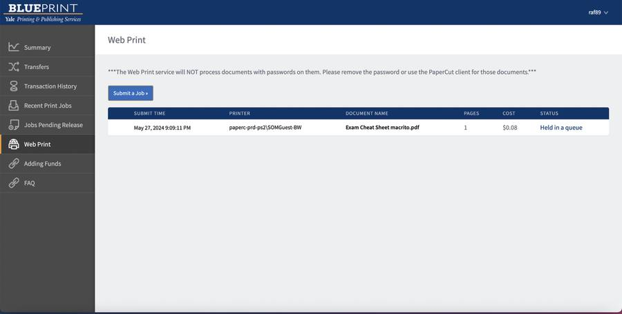
Room & Space Booking
EMS lets students book classrooms, breakout rooms, and interview rooms at Evans Hall.
- Breakout rooms: located on the 2nd and 4th floors, intended for learning teams, leadership club meetings, case team practice, and other group use. Not intended for individual studying.
- Interview rooms: intended for formal recruiting only; located on the 1st floor.
Booking flow
- Go to the Yale SOM EMS website, scroll to the bottom, and click "Sign In"
- Log in with your NetID
- Under "My Reservation Templates," pick a room category and click "Book Now"
- Enter your date, start time, and end time; click Search
- Pick an available room (shown with a green + and its capacity) and click the +
- In the "Attendance & Setup Type" pop-up, leave the default and click "Add Room"
- Click "Next Step"
- Fill in event name, event type, your group/cohort, and contact name/email
- Click "Create Reservation"
Managing & checking in
- View or cancel bookings under "My Events"
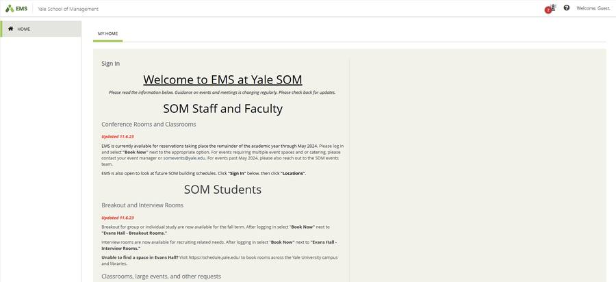
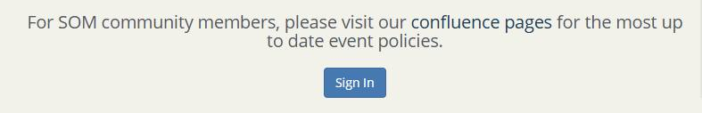
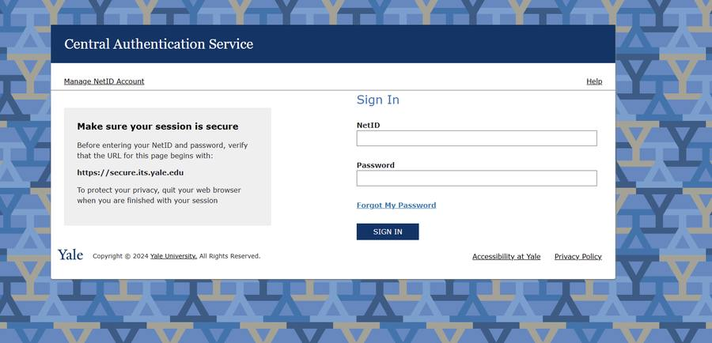
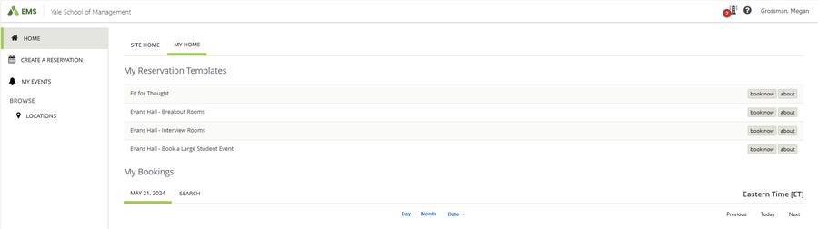
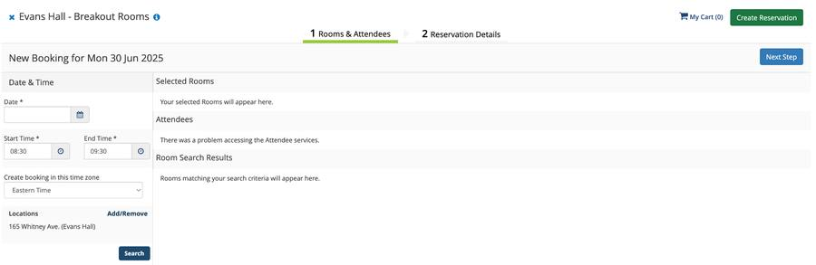
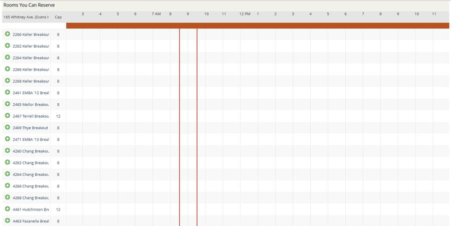
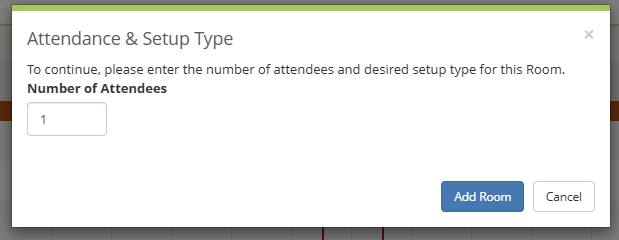
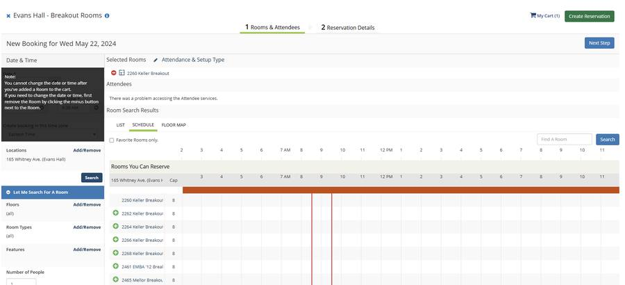
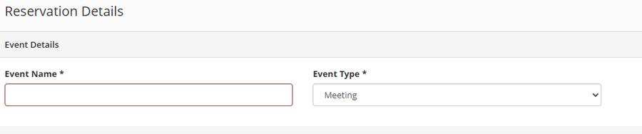
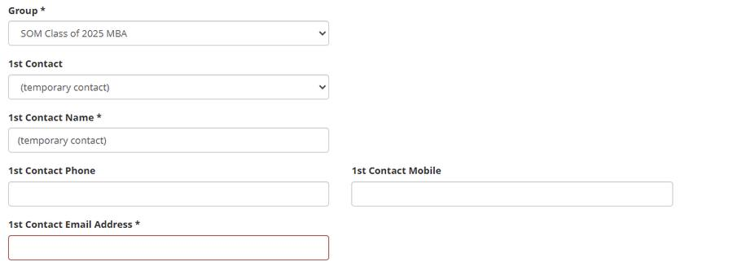
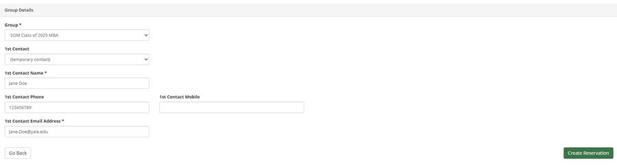
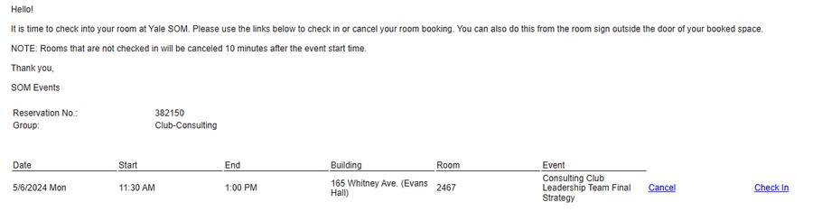
Video Conferencing
- Zoom: install from Yale Software Library and sign up with your Yale email
- SOM-branded backgrounds available here
- Click the gear icon in the Zoom app to confirm your Yale email shows as default before joining meetings
IT Equipment & Rentals
- Bass Media Equipment requires an active Yale ID
- IT Rentals: students borrow on the honor code and may need to sign a tracking form; email SOMIT@yale.edu for anything beyond what's available
Campus Life & Transit Apps
Yale Rec App — PWG access before your ID card arrives
- Search the App Store/Google Play for "Yale Campus Recreation" and install it
- Open the app; tap the barcode icon labeled "Yale Rec ID" in the top-left corner
- Tap "Yale NetID (CAS) User Login"
- Enter your NetID and password; approve the Duo push notification on your phone
- Tap "Yes, this is my device" to skip repeat logins
- At the PWG check-in counter, show/scan the barcode on your screen
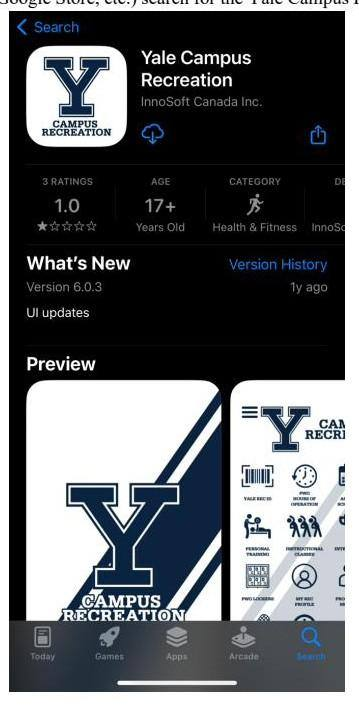
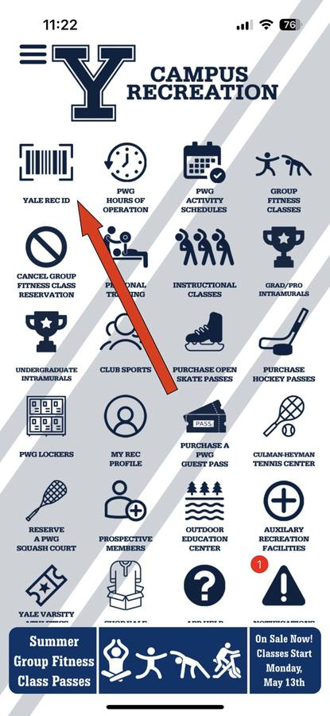
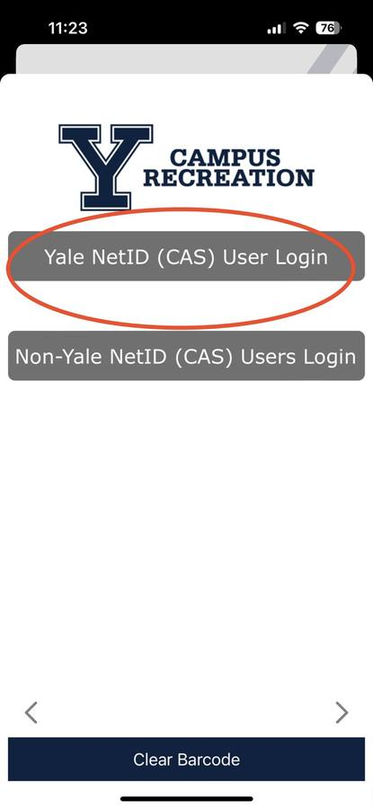
MTA TrainTime app — Metro-North tickets
Method A (by itinerary):
- Open the Trips tab
- Set origin/destination (e.g. Grand Central → New Haven)
- Tap the train you want
- Tap "Buy" in trip details
Method B (by ticket type):
- Open the Tickets tab
- Tap "Buy +"
- Choose trip type (one way, round trip, ten-trip)
- Select Peak/Off-Peak and check out
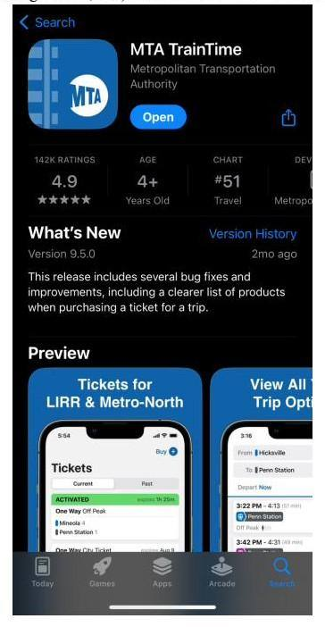
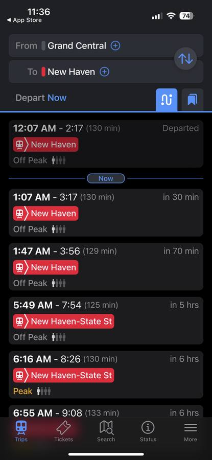
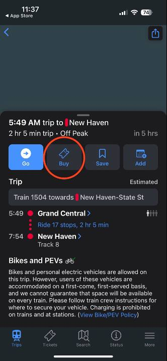
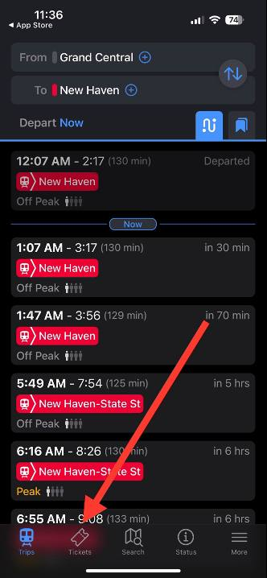
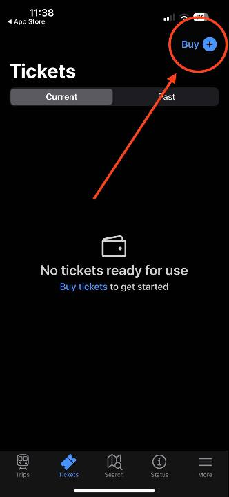
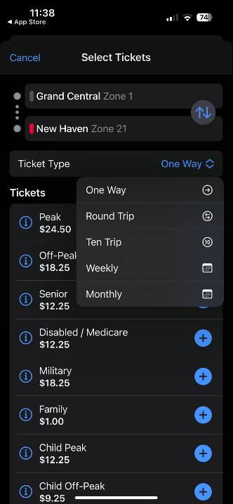
For other travel options, check out these resources.
Bookmarks — Master Links List
Getting Help — Contact & Escalation
All information and more can be found in the SOM IT Service Catalog.
For breakout room speakers not working, Outlook login issues, printing help, and similar IT/facilities questions:
For facilities issues (mouse in the student lounge, broken outlet, spill in the hallway):